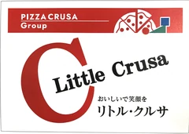

Tsubakiya
Sign in Japanese: つばき屋
Supermarket
1FHours 9:00–20:00Souvenirs
35 shops on 3 floors.
Tap a shop to see its floor and hours. If you scanned a QR code on a mall sign, your current location is marked in red.
Based on the mall's floor plan. Shapes are simplified, so sizes differ from the actual layout.
Swipe the map sideways.
Tap a shop on the map to see details here.
Shops without hours shown: please check with the shop. Mall hours are 10:00–20:00.
No shops found.
Looking for restrooms, lockers or Wi-Fi? They are on the floor map and in Facilities. Floor map · Facilities
Looking for a restroom? Restrooms are marked on the floor map. Floor map ↑
Sign in Japanese: つばき屋
Supermarket
Sign in Japanese: 文明堂総本店
Nagasaki castella (sponge cake) & souvenirs
Sign in Japanese: 御菓子司はたなか
Japanese & Western sweets, cakes, souvenirs
Sign in Japanese: ボンパティ
Souvenirs & cakes
Sign in Japanese: 小麦の奴隷
Bakery (sales counter)
Sign in Japanese: 和敬庵
Tea & coffee beans

Sign in Japanese: リトル・クルサ
Pizza, pasta & okonomiyaki
Sign in Japanese: たこ焼きけんちゃん
Takoyaki (octopus balls)
Sign in Japanese: 麺屋まる福
Udon & soba noodles, rice bowls, set meals
Sign in Japanese: ピーパラダイス
Ice cream, coffee & floats
Sign in Japanese: 釣具店 釣りします
Fishing tackle, secondhand goods & car rental
Sign in Japanese: 美髪・髪質改善クリニックLeon
Hair salon
Sign in Japanese: 楽天モバイル
Mobile phone shop

Sign in Japanese: ドコモショップ サテライト
Mobile phone shop
Sign in Japanese: 携帯相談室
Phone advice & repair
Sign in Japanese: 十八親和銀行 ATM
ATM
Sign in Japanese: 釣りします 不動産
Real estate (scheduled to open in December)
Sign in Japanese: オックスフォード 福江店
Bookstore
Sign in Japanese: 家具プラス ツーピース
Furniture
Sign in Japanese: パレット
Clothing, shoes, bedding & kids' wear
Sign in Japanese: バッグの多津屋 Hanako
Bags, accessories, clothing & hats
Sign in Japanese: メガネのヨネザワ
Eyeglasses & hearing aids
Sign in Japanese: 森補正専門店
Alterations & craft supplies
Sign in Japanese: 肩こり、ほぐし(隊) 恵-megumi-
Full-body massage
Sign in Japanese: 未来ごとう
Day care for seniors & fitness
Sign in Japanese: 託児所 シティハウス
Childcare (drop-in & holidays)
Sign in Japanese: ファンタジーランド
Game arcade (crane games, capsule toys, rhythm games, slot machines, etc.) & solo karaoke booths (Cocokara)
Sign in Japanese: 白寿ヘルストロン
Electric-potential therapy (self-service)
News, events and job listings are in Japanese only. Please use your browser's translation feature.